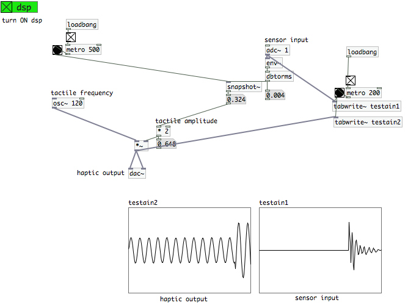
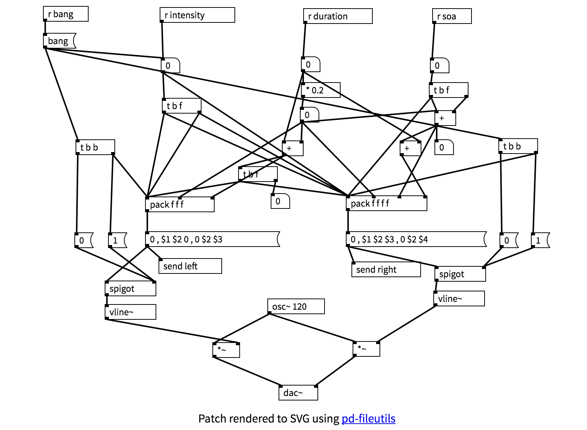
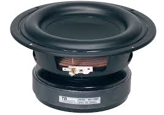
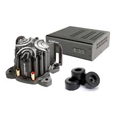
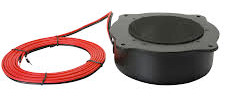
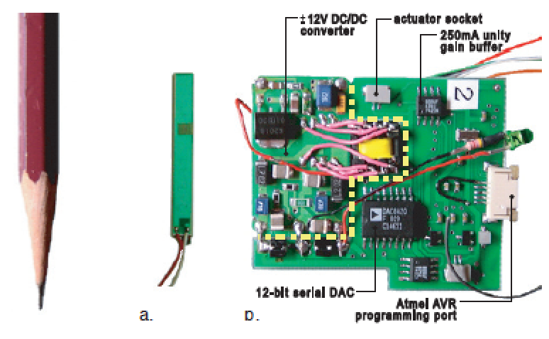
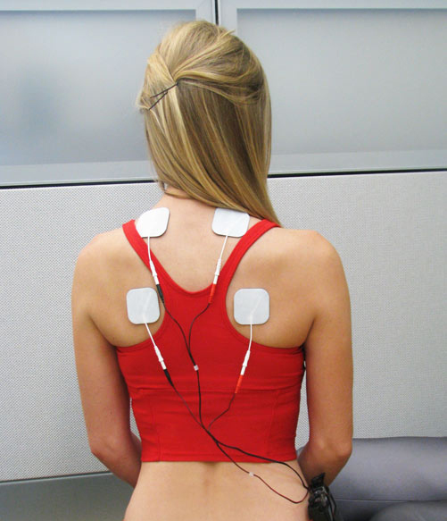

2nd Web Audio Conference 2016
Georgia Tech, Atlanta, USA, April 6
Christian Frisson, Thomas Pietrzak, Siyan Zhao, Zachary Schwemler, Ali Israr
Slides including Web Audio patches available on:
http://WebAudioHaptics.github.io
Clone repositories from:
https://github.com/WebAudioHaptics
A desktop app for patch-based visual programming of audio/video/sensor data flows
Main author: Miller Puckette
http://puredata.info
PureData patches running on a browser with Web Audio
Main authors: Sébastien Piquemal, Chris McCormick
https://github.com/sebpiq/WebPd
forked: https://github.com/WebAudioHaptics/WebPd
JavaScript toolkit of HTML5 audio interfaces
Main authors: Ben Taylor, Jesse Allison
http://www.nexusosc.com
https://github.com/lsu-emdm/nexusUI
Test WebPd and NexusUI
Turn on amplifications and fiddle with frequencies!
NexusUI controls not showing?
Reload the slide
WebPd not outputing sound?
Open your browser's console/inspector to check for messages.
Test if linear ramps are supported by your browser: http://webaudiohaptics.github.io/WAAOffsetNode/waatest/
Embedded in smartphones
Used for force or position control (robotics, haptics)
Subwoofers
Butt kickers
Tactile transducers
Piezo actuators
Electroactive polymers
Muscle stimulators
Siyan Zhao, Zachary Schwemler, Adam Fritz, and Ali Israr. "Stereo Haptics: Designing Haptic Interactions using Audio Tools." In Proceedings of the TEI '16: Tenth International Conference on Tangible, Embedded, and Embodied Interaction (TEI '16). DOI=10.1145/2839462.2854120
Plug the WebAudioHaptics kit
Play with the WebAudioHaptics kit
Turn on amplifications and fiddle with frequencies!
Apparent Tactile Motion
Saltation
SOA = 0.28 * duration + 60.7
S. Zhao, A. Israr and R. Klatzky, "Intermanual apparent tactile motion on handheld tablets,"
IEEE World Haptics Conference (WHC) 2015, doi: 10.1109/WHC.2015.7177720
Explore the effects of parameters
Let's code it yourself now!
Slides including Web Audio patches will remain on:
http://WebAudioHaptics.github.io
Clone repositories from:
https://github.com/WebAudioHaptics